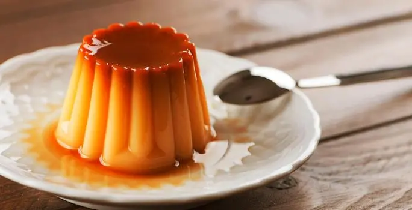

- 1 doy pack de CREMA DE LECHE NESTLÉ® (186 g)
- 1 y 1/2 taza de LECHE CONDENSADA LA LECHERA® (252 g)
- 1 taza de leche (250 ml)
- 2 ½ cucharaditas de esencia de vainilla (10 ml)
- 5 huevos (250 g)
- 2 yemas de huevo (34 g)
|
- Precalienta el horno a 130°C o 266°F 10 minutos antes.
- En el vaso de la licuadora adiciona la CREMA DE LECHE NESTLÉ®, la LECHE CONDENSADA LA LECHERA®, la
leche, la esencia de vainilla, los huevos y las yemas; licua todo hasta integrar bien.
- Engrasa y enharina una refractaria y coloca el contenido de la licuadora allí.
- En un tazón grande, bate los huevos, la leche y el extracto de vainilla hasta que estén bien
combinados.
- Lleva a baño maría en horno precalentado por una hora o hasta que al introducir un palillo en el
centro éste salga limpio.
- Retira del horno y deja enfriar a temperatura ambiente por 15 minutos, luego lleva a la nevera
por una hora hasta que enfríe.
|

|